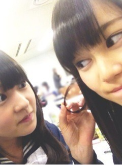

| 2013/03 10 Sun | 380回目*marika |
ひめか女神。
まりおが喜んでるよ。
そういえば撮影時にひめかが
ちゃんと目合わせてくれんかったし
あからさまに照れてたからね。
...まじかよ！
俺は勝ち組だ。↑↑
ふははははははは
なんて勝手に心の中で思ってました。
アホな男だわ...
まあ、なかいさん安定

......
今日は取材がありました



ヒゲ

いくちゃんとふざけた。
というか撮るときメンバーに
おもしろいことしてって言って
撮るから、結局変なのしかない

だって普通じゃつまんないもん。
生駒がちゅーしてきた。
ほ、褒めすぎると危険だ
 ！
！
！
**********
 1泊2日の旅行に行く時
1泊2日の旅行に行く時
まりっかならリュックで行く⁇
それともキャリーバッグで行く⁇
 ボストンで行く！
一応、しっかり服は選んで
ボストンで行く！
一応、しっかり服は選んで
行くけれどまりかちゃんの好みに
ハマる自信がないです。それでも
握手会に参加し続けていいのかな？
ぶっちゃけ、服とか関係ないです！
だって、目を見て話すじゃない？
他のことは考えず、会いたいって
思ってくれるだけでとても嬉しい。
リュックサックってださいかな？？
なんで
 ？ださくない！
高校は共学ですか??
そだよ
？ださくない！
高校は共学ですか??
そだよ
 部屋の状況ってどんな感じですか？
きれいきれいよ。
まりおは男前だけど？チャライの？
弟系で個性的でわりと真面目で
部屋の状況ってどんな感じですか？
きれいきれいよ。
まりおは男前だけど？チャライの？
弟系で個性的でわりと真面目で
文系で女の子だいすきだよ。
...という設定
テストが終わってから
最近はなにをしてるんですか？
いろいろ作ったり、ぶらりしたり
高くてもすーごく欲しい服だったら
買っちゃうタイプ？
自分で買えないからおねだりする。
***********
終わって時間があったので、
展覧会に行った。

「ボンボン展覧会へようこそ」
今日が最終日だったの。
かわいいのいっぱい癒されました。
ボンボンのブローチと
他にもいろいろ買った♪
強風で飛ばされそうになったし
黄砂で目が開かなかったし
薄着だし寒かったけど
行ってよかった...
最近趣味が充実してる

来週は握手会あるし、乃木充だ！！
明日も頑張ろう！
まりか
コメント(285)
2013/03/10 21:06